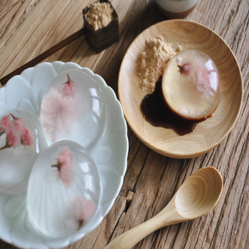

Bạn có biết về mochi nước không? Đây là một loại mochi ra đời và trở thành món được yêu thích của một tiệm bánh kẹo của Yamanashi. Mochi nước giống như một giọt nước khổng lồ và sẽ biến mất sau khoảng 30 phút khi để ở nhiệt độ phòng. Dùng chung với xirô đường nâu và bột đậu tương rang, đây là một món tráng miệng tuyệt vời.
Nguyên liệu
- 250 ml nước
- 20 gr đường
- 8 gr bột rau câu Nhật
- 8-10 hoa anh đào muối (lượng nguyên liệu này làm được 8-10 mochi, có thể khác nhau tùy thuộc kích thước khuôn của bạn)
Dụng cụ:
- Nồi
- Cây đánh trứng nhỏ
- Khuôn rau câu
- Tăm / Xiên gỗ
Cách làm
- Ngâm hoa anh đào muối để loại bỏ phần muối bám bên ngoài. Dùng khăn giấy lau khô. Đặt hoa vào khuôn.
- Cho đường và bột rau câu vào nồi. Đổ nước đầy 2/3 nồi và khuấy nhẹ cho đến khi đường và bột rau câu tan hoàn toàn.
- Đun sôi và để lửa nhỏ trong 2-3 phút. Trong quá trình này, nhẹ nhàng trộn đều. hỗn hợp. Mẹo nhỏ: Không khuấy quá mạnh tay vì có thể làm hỗn hợp nổi nhiều bong bóng.
- Tắt bếp, nhấc nồi xuống và đổ hỗn hợp rau câu vào các khuôn tròn. Sức nóng từ hỗn hợp sẽ làm hoa anh đào bung cánh.
- Dùng tăm hoặc xiên gỗ, nhẹ nhàng điều chỉnh vị trí các bông hoa cho ngay giữa hoặc mở rộng các cánh hoa nếu cần.
- Để lạnh trong 3 tiếng.
- Lấy mochi nước ra khỏi khuôn, dọn kèm với xirô đường nâu và bột đậu tương rang. Mẹo nhỏ: Để lấy mochi ra khỏi khuôn, dùng một cây tăm, hơi thấm ướt và nhẹ nhàng lướt quanh rìa mochi, sau đó nhẹ nhàng tách ra.
* Lưu ý rằng loại mochi nước này có thể tan sau khi để 30-45 phút ở nhiệt độ phòng, nên tốt nhất nên dọn ăn ngay hoặc để lạnh đến khi dùng.